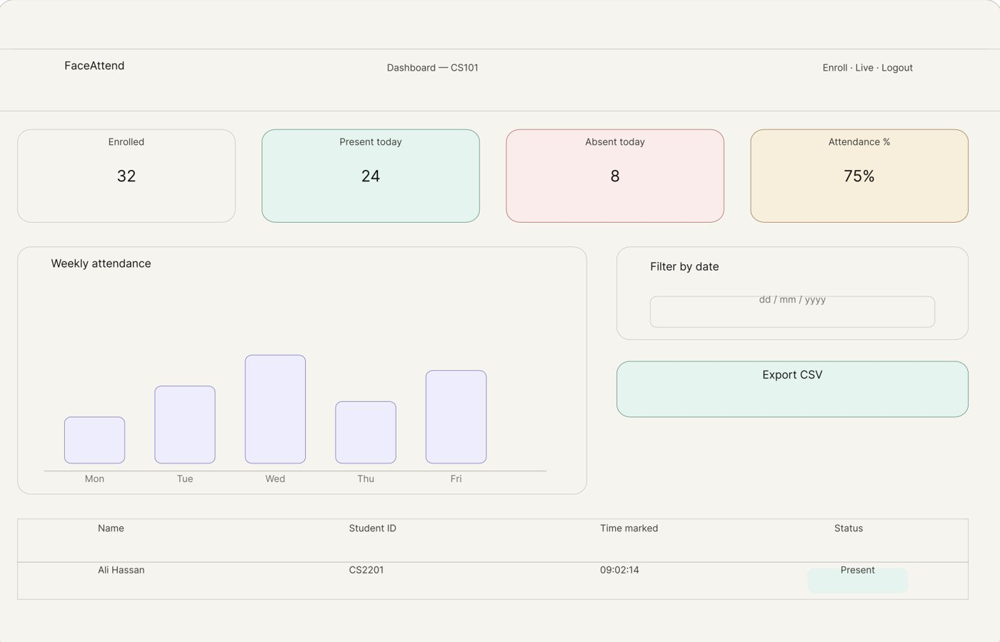
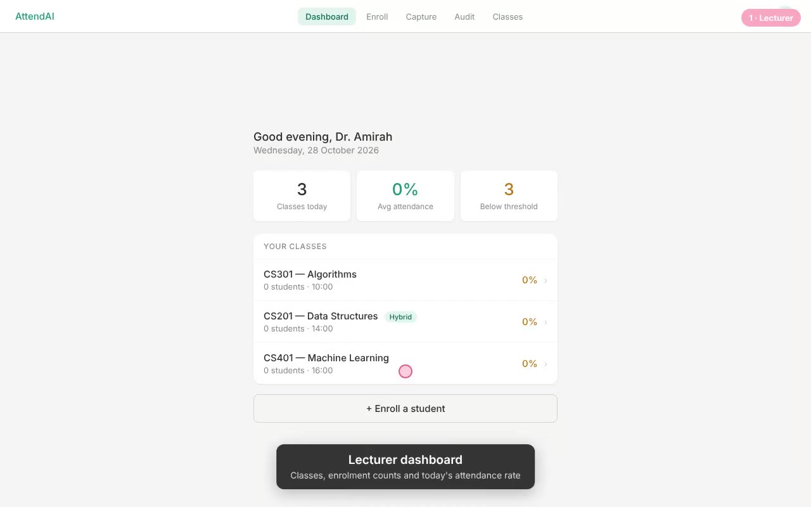
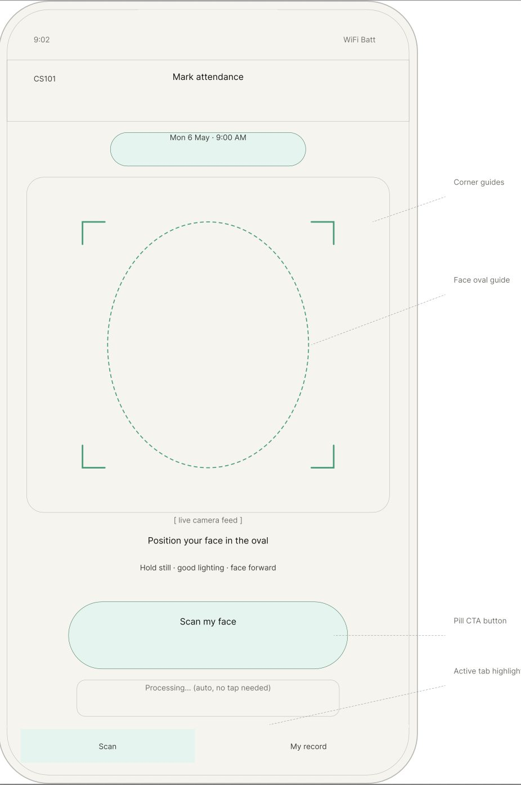
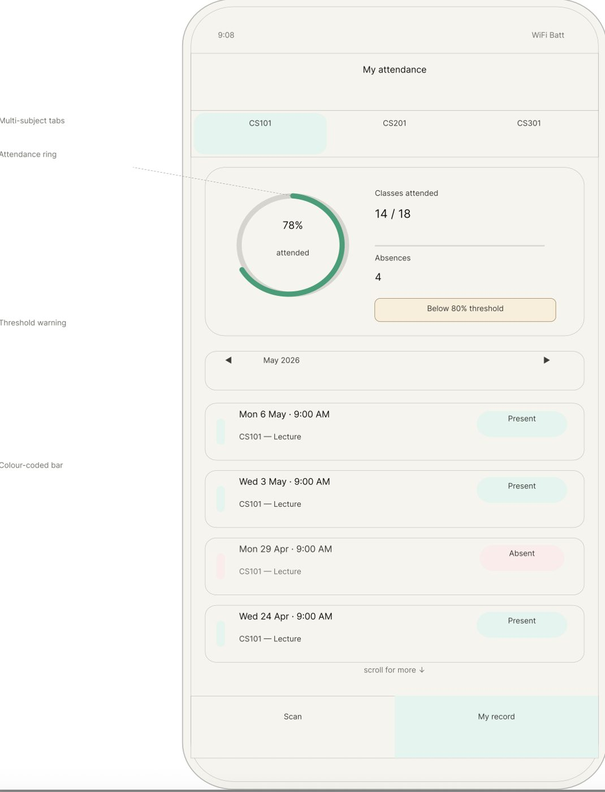
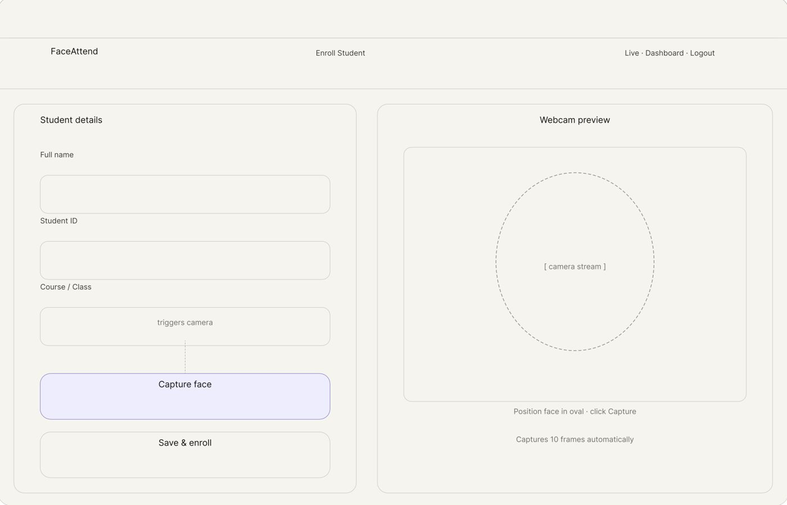
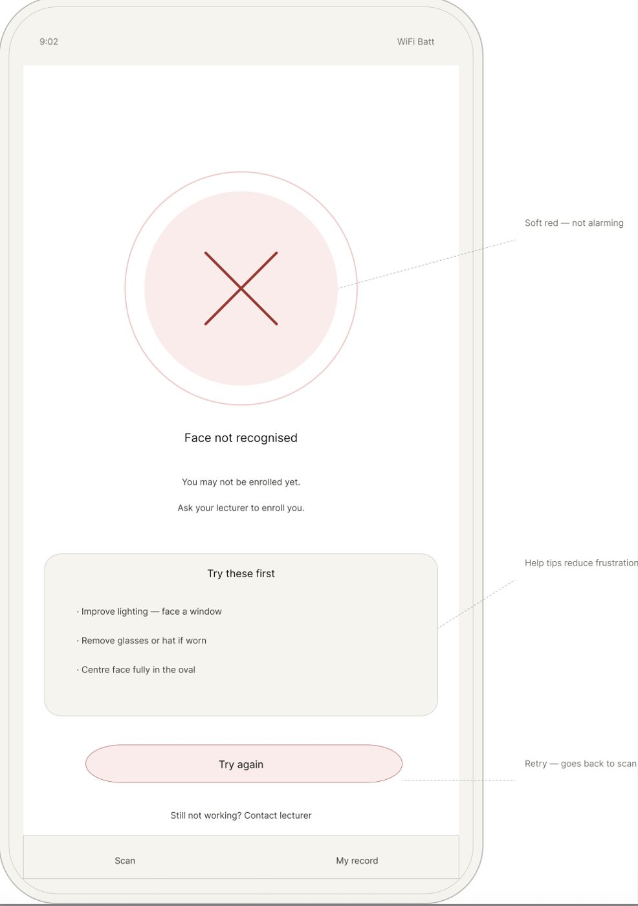
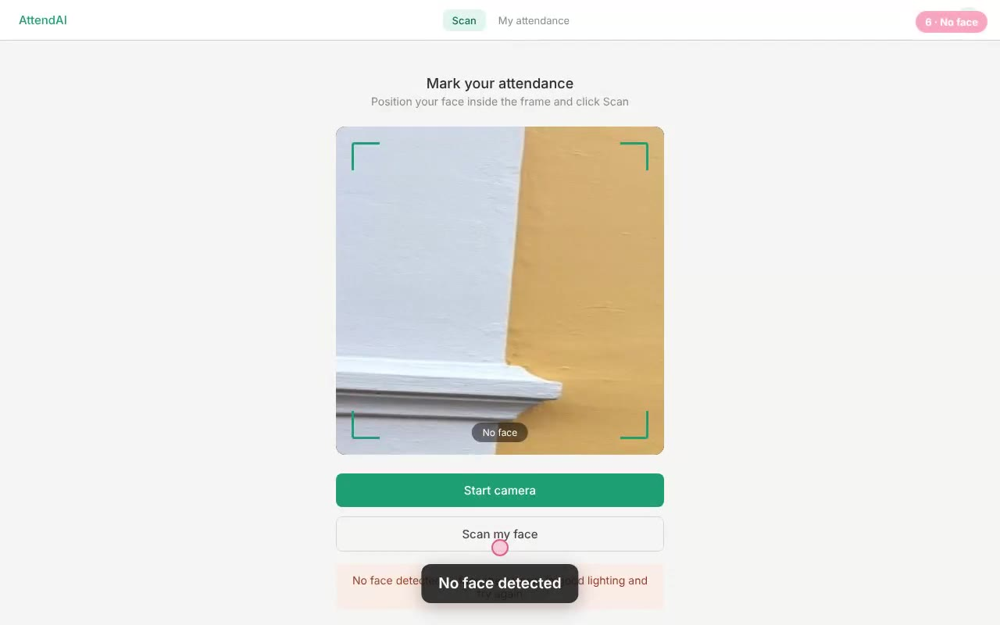
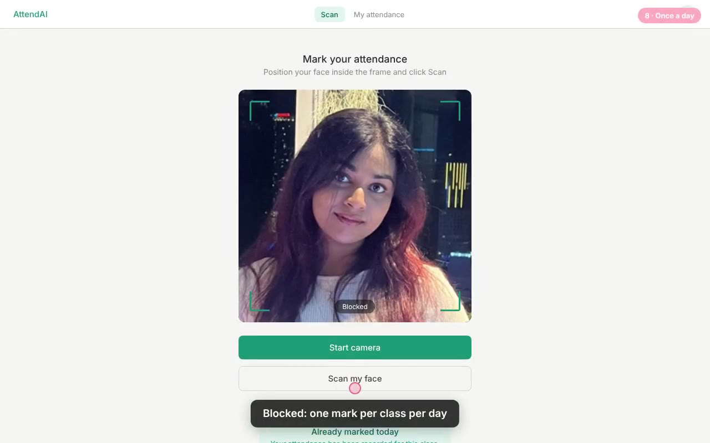
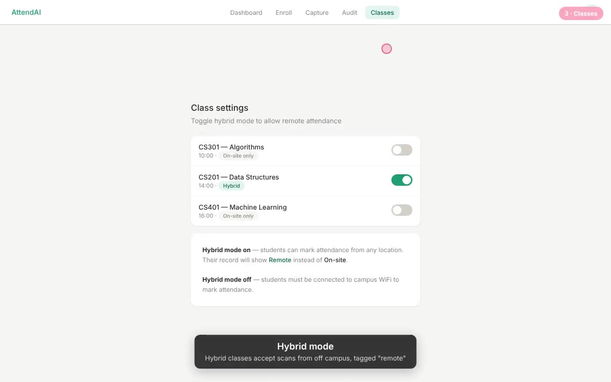

The idea
Attendance at university is still mostly a roll call or a sheet passed around the room. Roll calls eat the start of class. Sheets are easy to sign for a friend who isn't there, and the lecturer can't tell.
AttendAI lets a student mark attendance by looking at a webcam. The lecturer gets a record they can trust, with a timestamp and a photo behind every mark. I wrote this down before any code:
- Problem
- Manual attendance is slow, and paper registers make proxy attendance easy.
- For
- University lecturers first, department admins second.
- Goal
- Recognise registered students by face, log each mark with a timestamp, and make it hard to mark someone else present.
The face recognition is the part people notice, but most of the work went into the second half of that goal. A face match on its own doesn't stop someone scanning from their bed at home, or scanning twice.
The brainstorm
The planning doc had six user stories, an MVP list, and a short list of things I deliberately wouldn't build: a cloud face database, SMS or email alerts, and logins.
| As a | I want to | So that |
|---|---|---|
| Lecturer | Enroll a student's face once | The system recognises them every session |
| Lecturer | Have attendance marked automatically | I skip the roll call |
| Lecturer | See today's attendance at a glance | I get an instant class overview |
| Lecturer | Export attendance as CSV | I can submit records to the department |
| Admin | View historical records | I can track patterns over time |
| System | Flag faces it doesn't recognise | The lecturer knows about unknown people |
What changed between the plan and the build
Almost every line of the original plan moved. The biggest reversal was logins. With no login, the system has to answer "who is this?" by comparing a face against every enrolled student. Once a student signs in with their ID, the question becomes "is this really TP012345?", a one-to-one check that is faster and much harder to fool.
| Planned | Shipped | |
|---|---|---|
| Name | FaceAttend | AttendAI |
| Face model | face_recognition | OpenCV YuNet + SFace, DeepFace as an option |
| Camera | Webcam on the machine running the app | The student's own webcam, in the browser |
| Logins | None, cut from scope | Separate lecturer and student portals |
| Anti-cheating | No duplicate marks | Time window, once per day, campus network, snapshot |
| Frontend | Tailwind CDN, Chart.js | Jinja templates, hand-written CSS |
| Hosting | Local demo, Render for the UI | PythonAnywhere, with a Docker image for Azure |
| CSV export | MVP | Still on the list |
Wireframes first
I sketched the main screens before building them. Drag across the dashboard to compare the wireframe with what shipped. The stat cards survived; the weekly chart and CSV button didn't make it into the first version.


WireframeShipped



The build
It's a Flask app with three Python modules doing the real work. security.py holds the attendance rules, face_engine.py holds everything to do with faces, and database.py holds a small SQLite schema. The browser does the camera work.
The camera lives in the browser
The first plan assumed a webcam plugged into the machine running the app. That works on a laptop and means nothing on a server. So capture moved into the page: the student's browser opens their own camera, draws the current frame onto a canvas, and sends a single JPEG when they press Scan. The server never streams video and never needs a camera of its own.
// Grab the current video frame as a JPEG data URL.
capture(videoEl, quality = 0.85) {
if (!videoEl.videoWidth) return null;
const canvas = document.createElement('canvas');
canvas.width = videoEl.videoWidth;
canvas.height = videoEl.videoHeight;
canvas.getContext('2d').drawImage(videoEl, 0, 0);
return canvas.toDataURL('image/jpeg', quality);
},Four checks before a mark counts
A scan has to pass four checks in order. The first three are quick database lookups, so they run before the expensive face comparison. If a student is 20 minutes late, there's no point embedding their face. Try it:
- Within 15 minutes of class time
- No mark yet for this class today
- On campus network, or class is hybrid
- Face matches the enrolled photo
Each failure comes back with a message the student can act on, like how many minutes until the window opens. The location rule is the one with a twist: hybrid classes accept scans from anywhere, but the record is tagged remote, so the lecturer still sees who was in the room.
def check_location(ip_address, course_code):
...
on_campus = ip_address.startswith(CAMPUS_IP_PREFIX)
if on_campus:
return True, 'on-site', 'On campus network'
if is_hybrid:
return True, 'remote', 'Remote attendance allowed for this class'
return False, None, 'You must be connected to the campus WiFi to mark attendance'Every successful match also saves the frame as a timestamped snapshot. If a lecturer doubts a mark, the audit log shows exactly what the camera saw.
Two face engines, one interface
Face recognition here works in two steps. A detector finds the face in the frame, then a recognition model turns the cropped face into an embedding, a list of numbers that describes it. Two photos of the same person produce embeddings that point in nearly the same direction, so a match is a cosine similarity above a threshold.
I started with DeepFace running Facenet on TensorFlow. It was accurate and it was heavy. So I wrote a second engine on OpenCV's YuNet detector and SFace recogniser, two small ONNX models, and put both behind the same verify and identify functions. One environment variable, FACE_ENGINE, picks which runs.
Speed only matters if the answers agree. On DeepFace's own sample photos, both engines made the same match or no-match decision on all 28 pairs. That was enough to make the light engine the default.
The other speed-up was caching. Enrolled photos don't change, so each one is embedded once and kept in memory, keyed by the file's modified time. A scan only has to embed the live frame.
# Enrolled photos don't change, so their embeddings are computed once and reused.
_enrolled_cache = {}
def _enrolled_embedding(photo_path):
mtime = os.path.getmtime(photo_path)
cached = _enrolled_cache.get(photo_path)
if cached and cached[0] == mtime:
return cached[1]
embedding = _embed(photo_path)
_enrolled_cache[photo_path] = (mtime, embedding)
return embeddingThe lecturer's live session uses the same pieces the other way round. It embeds one frame, compares it against every cached student embedding, and picks the closest one under the threshold. That's the "who is this?" question again, but only for the lecturer, who is watching.
Three tables
students
- student_idPK
- full_name
- course
- photo_path
classes
- course_codePK
- course_name
- schedule
- hybrid
attendance
- student_idFK
- course_codeFK
- date, time
- snapshot_path
- location
What cost the most time
- Wall
DeepFace needs about 2 GB of memory
TensorFlow alone is bigger than any free hosting tier. This is what pushed me to write the OpenCV engine, test it against DeepFace, and make it the default.
- Wall
Azure was blocked by my university's tenant
My Azure for Students subscription runs under the university's account, and its policy blocked it. The Docker and Azure Container Apps setup is written and ready, but the live demo moved to PythonAnywhere's free tier in the meantime.
- Bug
The webcam only works over HTTPS
Browsers only hand over the camera on a secure page, with localhost as the exception. So everything worked locally, and any deploy had to be HTTPS from the start.
camera.jsnow explains the problem in plain words instead of failing silently. - Bug
A server has no camera
Reading frames on the server only ever worked on my own laptop. Moving capture into the browser fixed it, and sending one JPEG per scan is lighter than a video stream anyway.
- Bug
Models aren't guaranteed thread-safe
Two scans at the same moment could hit the model together. A lock now runs face checks one at a time. At about 0.3 seconds each, nobody notices the queue.
- Care
Faces are biometric data
Enrolled photos and snapshots are git-ignored, so they never end up in the repo. In the public demo, enrolled students and their photos are deleted after 24 hours.
Two ways to run it
PythonAnywhere
- OpenCV engine, about 225 MB
- Served over HTTPS through a WSGI file
- Demo mode on, faces deleted after 24 hours
Docker + Azure
- DeepFace engine in a Docker image
- GitHub Actions builds it on every push to main
- Azure Container Apps, 1 vCPU and 2 GiB, scales to zero
The Azure version is capped at one replica on purpose. SQLite is a single file, so every visitor has to share the same container to see the same data.
The demo
It's live. Demo mode relaxes the time and campus checks so you can try it from anywhere, at any hour. Everything else behaves as it would in class.
Open the live demo divansshi.pythonanywhere.comTo try it: sign in to the lecturer portal, enroll yourself with your webcam, then go to the student portal and scan. Your photo is deleted after 24 hours.



What I'd change next
- Liveness detectionA printed photo or a phone screen held up to the camera can still pass. This is the biggest gap.Next
- Persistent storageA managed database and file storage, instead of SQLite on a disk that resets.Planned
- Real lecturer accountsHashed passwords instead of one login set in the environment.Planned
- CSV exportIt was in the first MVP list and it's still not built.Planned
- Threshold tuningLookalikes and siblings need a closer look than OpenCV's default value.Planned
- Browser camera, light engineBoth done for this version.Done
If I started again, I'd pick where it runs before picking the model. The DeepFace version worked fine on my laptop. Most of the rework came from finding out it couldn't run anywhere free.